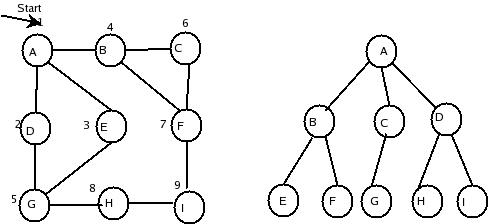
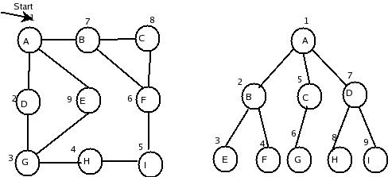

Graph Traversing
Traversal of a graph means that systematically visiting all nodes exactly
once in the graph. The two important traversal methods are #034;
Breadth-first Search" and “Depth-first Search”.The graph traversal
start at an arbitrary vertex since there is no node as special.
Assume that each node in a graph will be in one of three states
while traversing the graph:
ready state,
waiting state,
visited state.
Breadth-first Traversal:-
This strategy is much similar to level-by-level traversal of an
ordered tree. Breadth-first search operates by processing nodes in layers.
The breadth-first search can begin at any arbitrary node. The nodes which
are adjacent to start node are processed first,and proceeds to adjacent
nodes of that nodes just visited. This process starts until all nodes are
visited. If the traversal just visited a node A,then it next visits all the
nodes adjacent to A,keeping the node adjacent tothese in waiting list to be
traversed after all nodes adjacent to A have been visited.
A datastructure queue is used to place all waiting nodes.This queue is
also convenient to keep the track of nodes that are already visited,so that,
a node is visited only once.
The general Breadth-first traversal algorithm is as follows:
1)All nodes are initialized as ready states and initialize queue to empty.
2)Begin with any node which is in ready state and put into queue.mark the
status of that node to waiting.
3)While queue is not empty do begin
4)Delete the first node k from queue and process it.Mark the status of that
node to visited.
5)Add all the adjacent nodes of K which are in ready state to the rear side
of the queue and mark the status of those nodes to waiting.
6) If the graph still contains nodes which are in ready state then goto
step2.
7) return.
The step6 in the above algorithm handle those nodes which does not have a
path from starting node to them.

The above fig shows the visiting nodes in breadth-first traversal.
Numbers on the nodes indicate the sequence of nodes visited in Breadth-first
traversal.
Depth-first traversal:-
The depth-first traversal of a graph is much similar to preorder
traversal of an ordered tree. The traversal of a graph start at any arbitrary
node,say A. Suppose b,C,D and E be the nodes adjacent to A. Then we will next
visit b and keep C,D, and E waiting. After visiting B we traverse all the
vertices to which it is adjacent before returning to traverse C,D and E.
In the depth-first traversal,we backtrack on a path once it reached
the end of that path. We consider the datastructure stack instead of a queue
as in breadth-first traversal.

The above fig shows the visiting nodes in depth-first traversal.Number
on the nodes indicate the sequence of nodes visited in depth-first
traversal.
Algorithm:-
1)All nodes are initialized to ready state and initialize stack to empty.
2)Begin with any node which is in ready state and push into stack. mark the
status of that node to waiting.
3)While stack is not empty
do
begin
4)pop the top node k of stack and process it. Mark the status of that node
to visited.
5)Push all the adjacent nodes of k which are in ready state into stacj and
mark the status of those nodes to waiting.
end.
6)If the graph still contains nodes which are in ready state then
goto step2
7)return.
The depth-first traversal continues progressively deeper in a recursive
manner.
Back
Back To Main
|